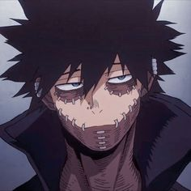
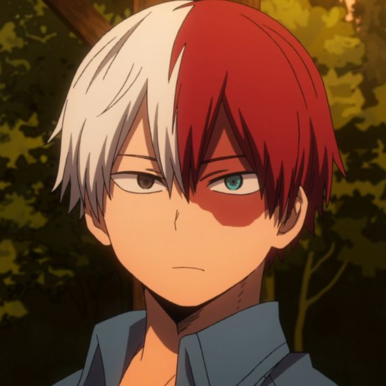
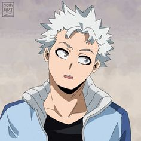
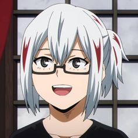
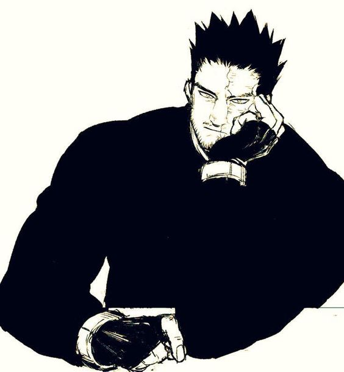

Blog do Endeavor
Filhos do Endeavor
O herói Endeavor teve quatro filhos com Rei Todoroki: Shoto, Natsuo, Fuyumi e Toya.
No entanto, ele nunca deu muita atenção para qualquer membro da família que não fosse o prodígio Shoto.

não encosta" style="width:200px;height:200px;">


Aparência
Endeavor é um homem alto com físico musculoso. Ele tem um cabelo vermelho curto, arrepiado e um rosto coberto por chamas, mascarando seu rosto por completo. Quando ele reduz as chamas em seu rosto, elas formam uma barba. Seu uniforme de herói consiste em uma vestimenta preta de corpo inteiro, coberta por chamas com duas braçadeiras que lembram costelas e botas que vão até a canela. Ao redor de sua cintura está um cinto com um bolso branco no lado direito do corpo, enquanto que a parte superior de seu rosto é coberta por chamas que formam uma espécie de máscara, com um bigode de chamas e uma barba longa.
Individualidade
Hellflame( ela permite que ele crie, manipule o fogo)
Flashfire Fist - Jet Burn(O Endeavor dispara chamas pelas costas de seu punho para impulsioná-lo
para frente e faz um poderoso golpe no inimigo)
Brilliant Scorching Fist - Hell Spider(O esforço lança fluxos de fogo saindode seus dedos por todos os lados)
Um novo começo
É o capítulo que marca seu primeiro trabalho como numero 1 após a aposentadoria do all-migth,o episódio tem grandes tempo de tela para sua familia, demonstrando que a luta do episódio representa muito mais do que um caso de heroi mas uma luta contra seus demonios do passado e seus arrependimentos